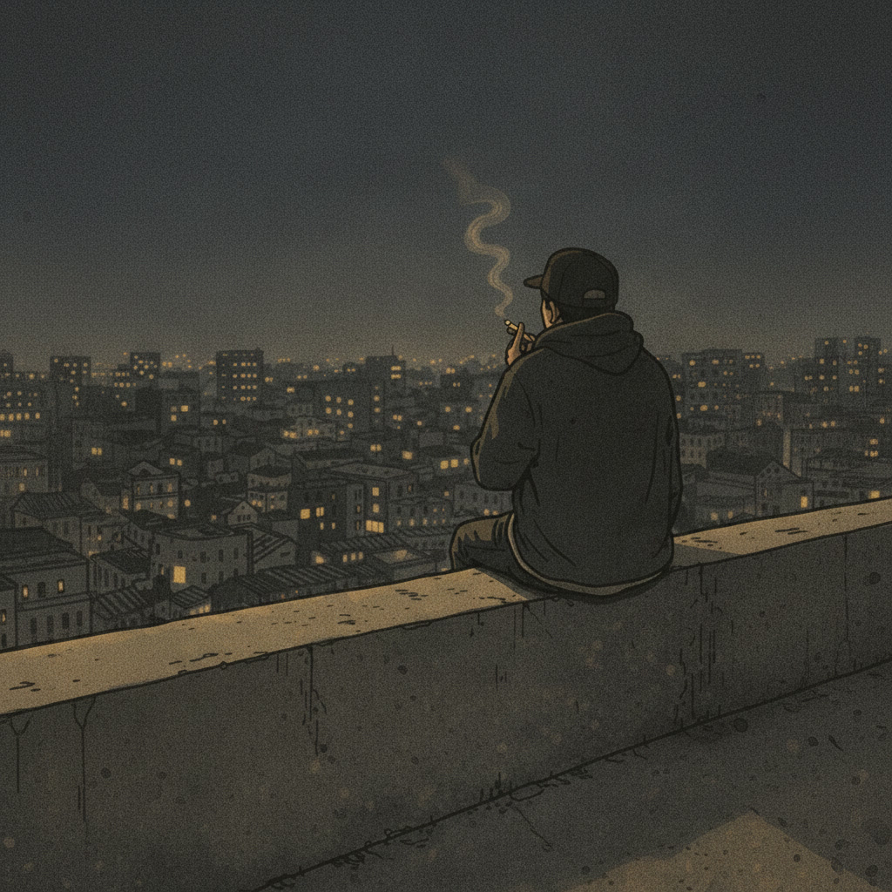
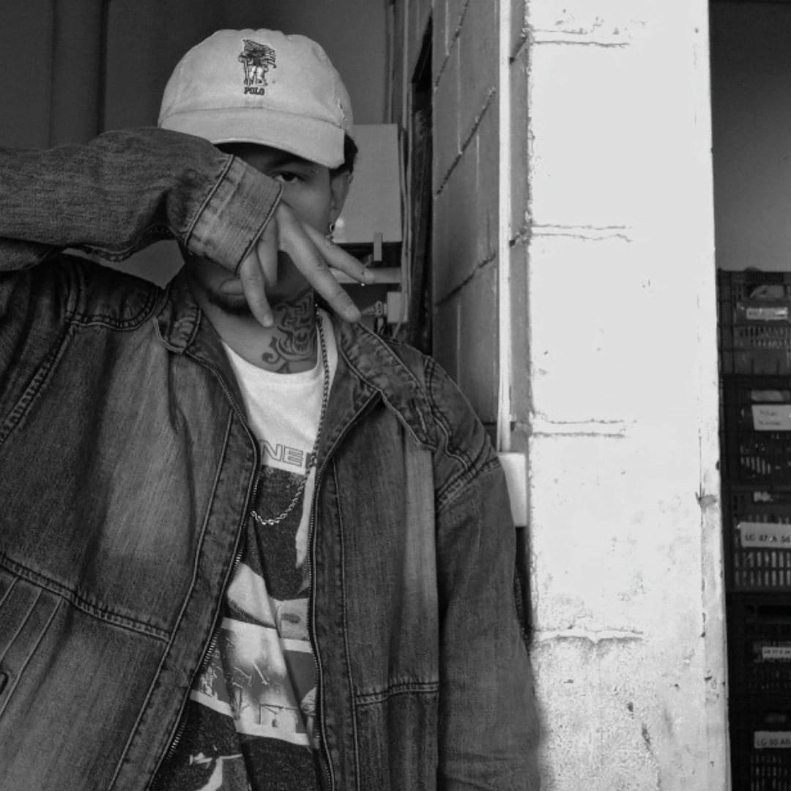
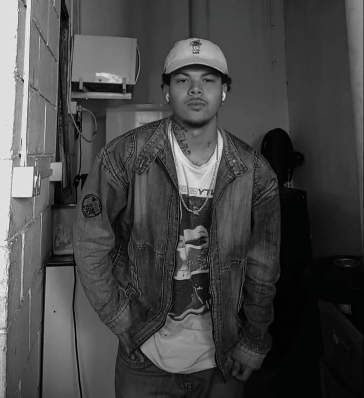

Ikrus, nome artístico de Ícaro Vieira da Silva, nasceu em Guanambi, Bahia. Artista e produtor independente brasileiro, iniciou sua trajetória em 2017 com sad songs acústicas e logo evoluiu para o hip hop, mantendo a originalidade e o sentimento como marcas centrais de sua identidade artística.
Em suas músicas, Ikrus transforma sentimentos, vivências e questionamentos em versos que unem sensibilidade, autenticidade e profundidade.

Para shows, parcerias, feats, entrevistas ou outros assuntos profissionais.